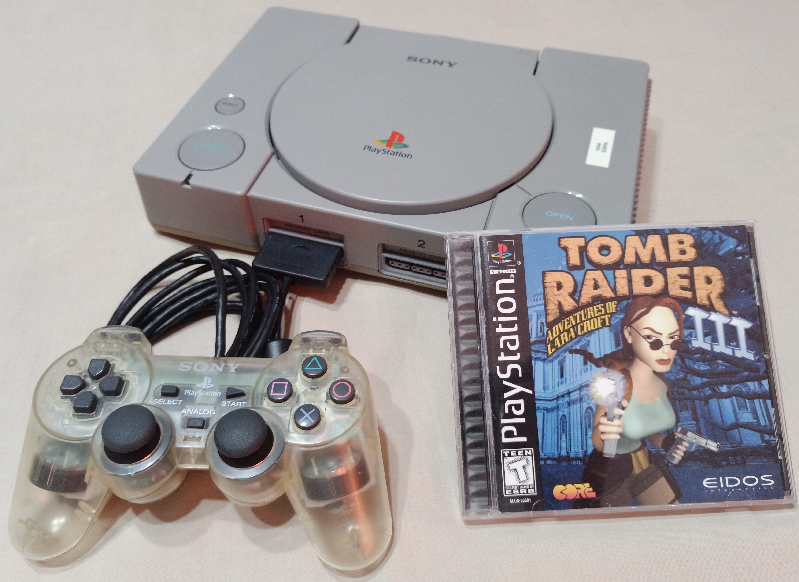

Em meados de 1994, lá na terra do sol nascente, o Japão, a Sony (gigante em aparelhos eletrônicos) concebeu o Play Station, estreante no mundo dos videogame. Console de 5ª geração, com processamento de 32bits e leitura de dados (jogos) por mídia CD ROM, trouxe consigo um novo conceito, abranger um público diversificado, mais adulto, saindo assim do conceito de que videogame é coisa só para crianças.
O PlayStation no seu inicio de carreira foi completamente desacredita, tido como aventureiro, mas não demorou muito para que os olofotes do mercado de videogames se voltassem para o recém chegado, o PlayStation. Sua popularidade se alastrou, se difundiu de tal forma que a marca de vendas atingiu um patamar nunca antes visto, mais de 100 milhões de unidades vendidas. O nome PlayStation se tornou sinônimo de videogame por toda parte. O record de vendas de 100milhões até hoje é um alvo tido como um sonho de consumo para as grandes fabricantes de consoles dos dias atuais (Abril/2022).
A popularidade do agora tão respeitado console da Sony, surgiu com o feito inacreditável de mais de 4mil títulos oferecidos em seu cardápio de jogos. Tinha jogo para todo tipo de gosto e gênero, essa diversidade de jogos oferecidos praticamente mensal, foi possível devido a sua mídia para armazenamento de dados, o CD-ROM. Essa novidade chamou a atenção avassaladora de todos os públicos; Todo mundo queria conhecer o tal CD-ROM preto bem chamativo- Até hoje o danado é bonito. Este tinha uma capacidade de armazenamento de 700MB de memória, contra os 60 ou 100 MB-na melhor ipótese- dos cartuchos de memória da época.
O formato de mídia CD-ROM além de trazer maiores lucros por ser mais barato (pois a Sony era detentora desse formato de mídia), inovação e maior capacidade de armazenamento, trouxe para os desenvolvedores de jogos, liberdade e flexibilidade para criar o oferecer títulos. Vale lembrar que para, programar neste novo formato de mídia, a estrutura de programação é muito mais rápida e fácil. Com isso, não demorou muito para os desenvolvedores das concorrentes se interessarem e migrarem para a Sony, com o seu PlayStation. Isso explica porque o PlayStation tinha tantos títulos em tão pouco tempo.
Num mundo onde os videogames eram literalmente dominados por gigantes do ramo SEGA e Nintendo, a Sony com o seu então recém-nascido, o PlayStion, teve que passar por vários desafios, dentre eles desafios internos na própria companhia. Entrar para o mundo dos videogames definitivamente era algo que a Sony não queria. Mas quis o destino que um... aliás dois, estivessem trabalhando na Sony Co, e um desses fosse não menos que o presidente “do barraco”, o tão temido quanto respeitado, Norio Yoga, que deu total apoio e carta branca ao pai do PlayStation. Se o PlayStation tivesse que agradecer a alguém por ter nascido, vindo ao mundo e chamar de pai, certamente o faria a Kem Kutaragi.
Kem Kutaragi se formou em engenharia elétrica e ficou reconhecido na Sony por ser um solucionador de problemas em protótipos de novos produtos da companhia em que trabalhava. Quando ele chegava em casa depois do trabalho, observava suas crianças brincar com videogames, assim começou a surgir interesse pela área, esse mundo dos jogos. O ponta pé inicial foi desenvolver o chip de som para o Super Nintendo.
Nessa época a Sony fabricava componentes para a Nintendo. Mas esta resolveu cortar os laços comercias com a Sony. Com isso, não restou outro caminho para a Sony a não iniciar seu próprio console, mesmo depois de procurar outros parceiros. O Kem Kutaragi estava com sua carreira profissional em risco, mas o grande chefe da Co. Estava lá para livrá-lo “das garras do leão”, pois todos queriam sua dispensa. Como vemos, o PlayStation não nasceu de uma ideia genuína, mas sim, um fruto de um negócio mal sucedido entre a Nintendo e a Sony. A trajetória do PlayStation1 se traduz em esforço árduo, fé, convicção, disciplina e especialmente humildade em reconhecer que ninguém por capacitado que seja, consegue alcançar seu o objetivo isolado dentro de sua própria “bolha”.
Ken Kutaragi. Formado em eng.Elétrica, se tornou destaque na Sony por sua habilidade em resolver problemas de projetos dentro da corporação.
Norio Ohga. Presidente da Sony na época em que Ken Kutaragi estava trabalhando no desenvolvimento do chip do som para o Super Nintendo, da Nintendo.
